Stephen Su
Project 4A Overview
In this project, we learn about how image warping and mosaicing. Using two or more photographs, we will create an image mosaic by projectively warping images and stitching them together. To warp images, we need to define correspondence points between each image and calculate a homography transformation matrix from our correspondence points. Afterwards, we can stitch the images together by aligning each image.
Part 1: Shooting and Digitizing Pictures
Before we start, we need to first a variety of pictures to use for testing. A rule of thumb while taking these pictures is to keep the center of projection (COP) fixed and take pictures by rotating the camera along the center of projection. It is generally recommended to have between 40% and 70% overlap between pictures. These pictures were all taken with a iPhone 12 Pro.
|
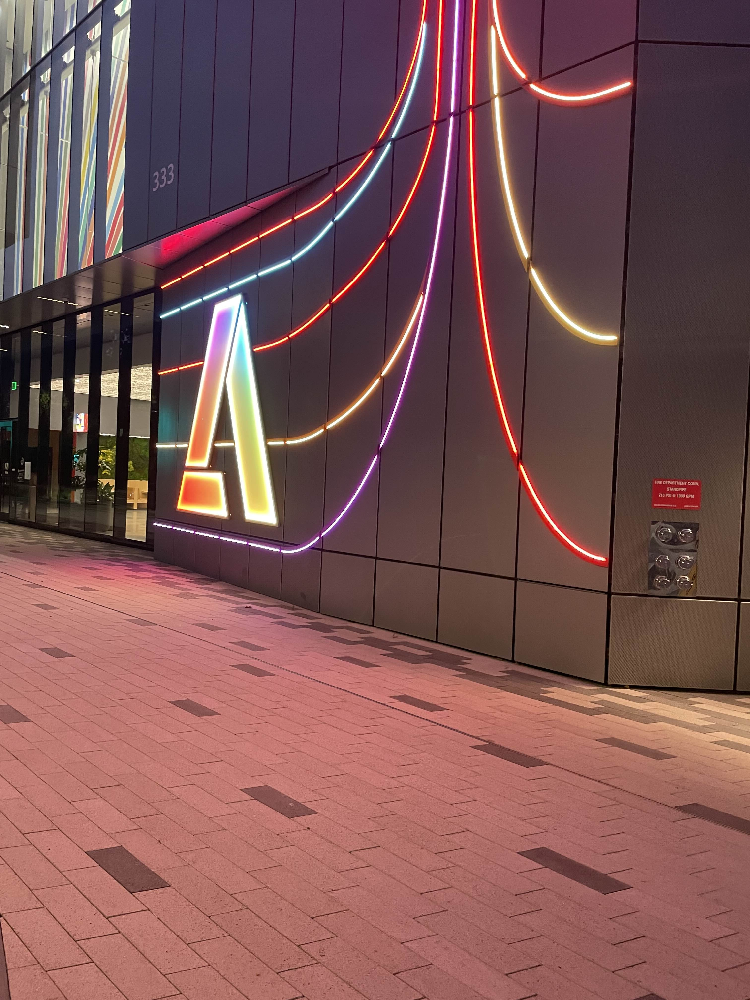
Adobe Founder's Tower at Night |

Macbook with Sticker |
|
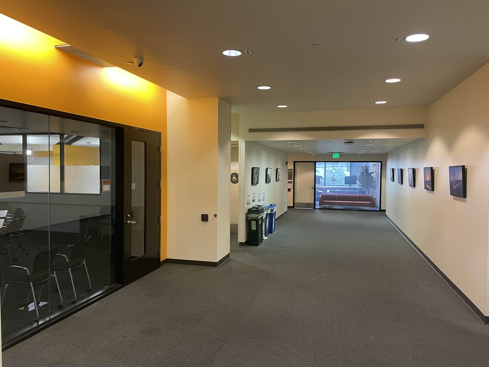
Soda Hall 1 |
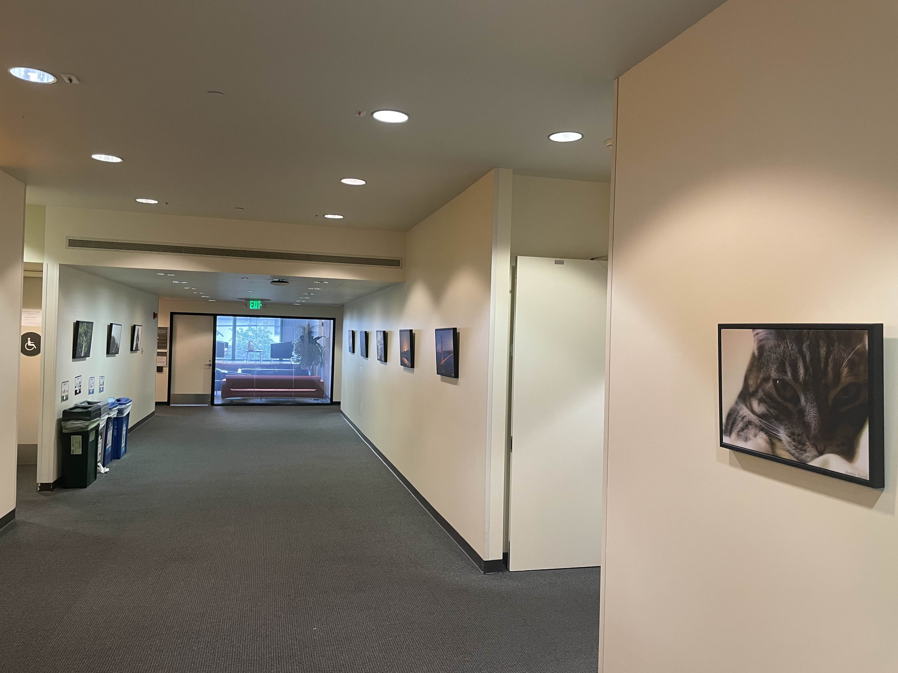
Soda Hall 2 |
|
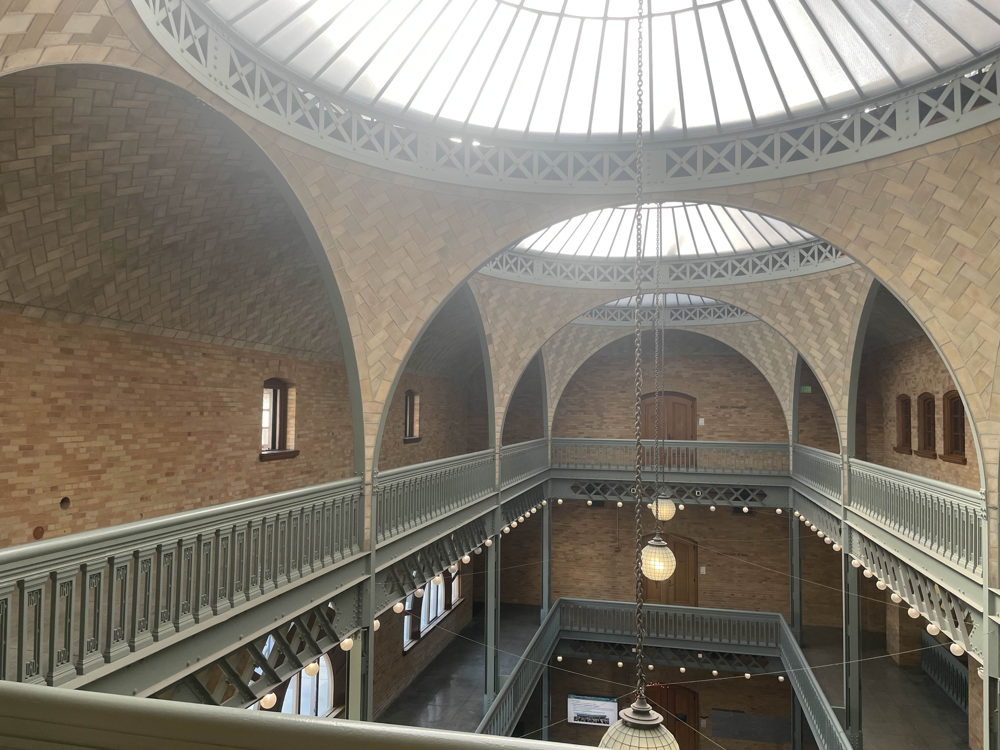
Hearst Mining Building 1 |
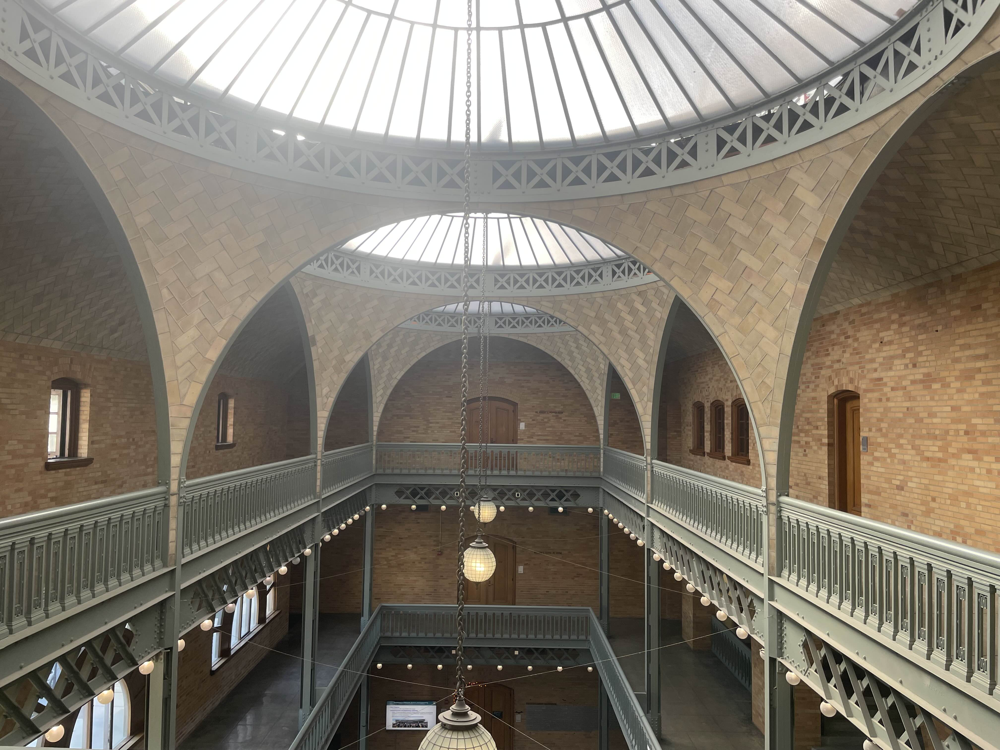
Hearst Mining Building 2 |
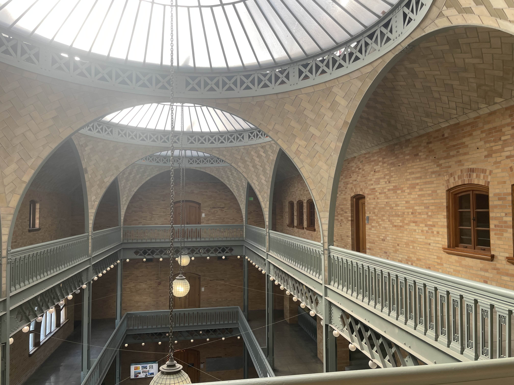
Hearst Mining Building 3 |
|
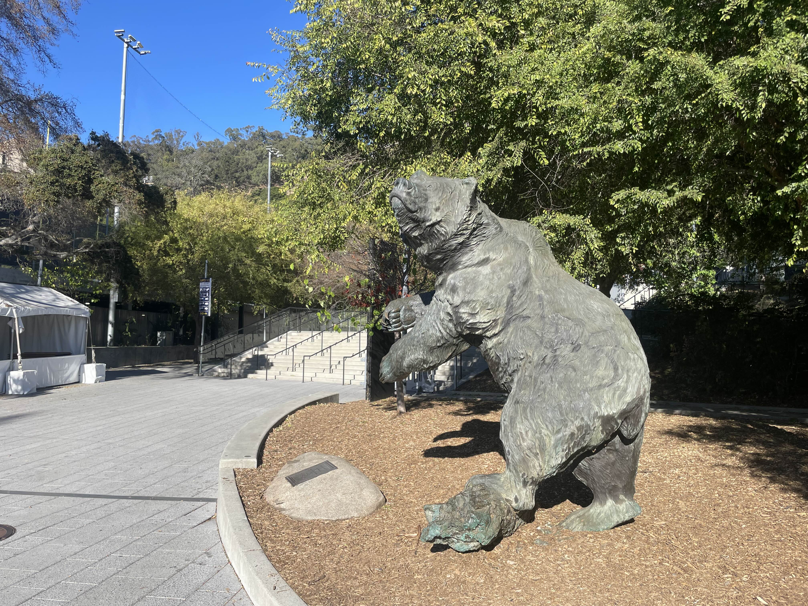
Sturdy the Bear 1 |
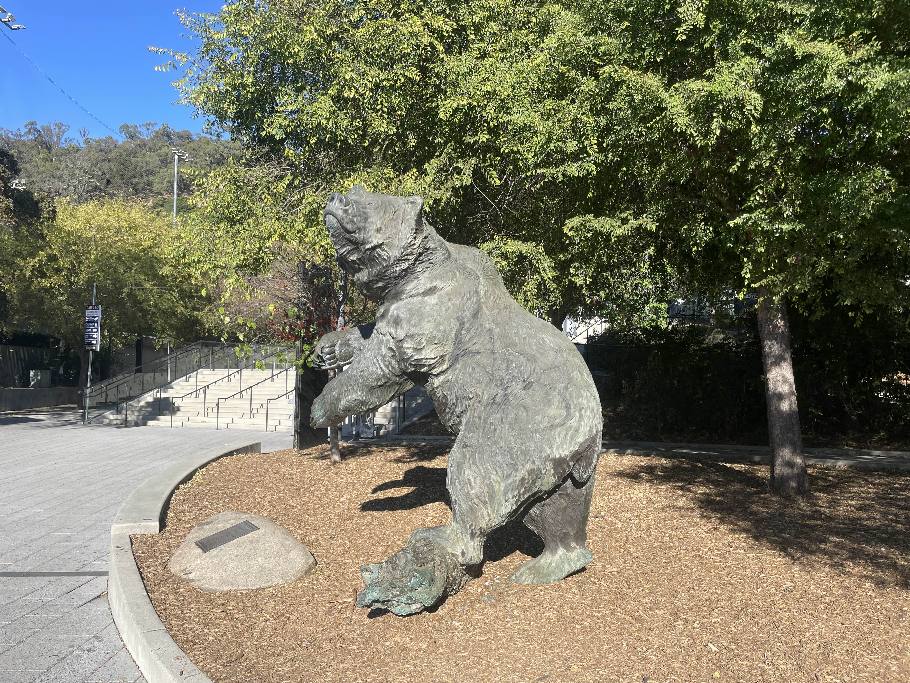
Sturdy the Bear 2 |

Sturdy the Bear 3 |
Part 2: Recovering Homographies
To warp our images, we first need to recover the homography transformation matrix. The homography transformation matrix is a 3x3 matrix that maps points from one image $p$ to points in another image $p'$. The image transformation is then represented as $p'=Hp$, with H having 8 degrees of freedom. Below is an equation representing $p'=Hp$.
$$\begin{bmatrix} a && b && c \\ d && e && f \\ g && h && 1 \\ \end{bmatrix} \begin{bmatrix} x \\ y \\ 1 \\ \end{bmatrix} = \begin{bmatrix} wx' \\ wy' \\ w \\ \end{bmatrix} $$The goal here is to solve for the 8 unknown variables in the homography matrix. If we expand this matrix multiplication into a set of equations, we get:
\begin{cases} ax + by + c = wx' \\ dx + ey + f = wy' \\ gx + hy + 1 = w \\ \end{cases}Since we know the value of $w$, we can subsitute the value of $w$ into the first two equations. We end up with the following result.
\begin{cases} ax + by + c = (gx + hy + 1)x' \\ dx + ey + f = (gx + hy + 1)y' \\ \end{cases} \begin{cases} ax + by + c - gxx' - hx'y = x' \\ dx + ey + f - gxy' - hyy' = y' \\ \end{cases} \begin{cases} ax + by + c + d(0) + e(0) + f(0)- gxx' - hx'y = x' \\ a(0) + b(0) + c(0) + dx + ey + f - gxy' - hyy' = y' \\ \end{cases}If we put these equations into matrix form, we get the following matrix multiplication.
$$ \begin{bmatrix} x && y && 1 && 0 && 0 && 0 && xx' && x'y \\ 0 && 0 && 0 && x && y && 1 && xy' && yy' \\ \end{bmatrix} \begin{bmatrix} a \\ b \\ c \\ d \\ e \\ f \\ g \\ h \\ \end{bmatrix} = \begin{bmatrix} x' \\ y' \\ \end{bmatrix} $$From here, we can derive a general form to solve for the values in the homography matrix given multiple correspondence points, where each correspondence point is represented as $(x_i, y_i)$ in our first image and $(x'_i, y'_i)$ for our second image.
$$ \begin{bmatrix} \vdots && \vdots && \vdots && \vdots && \vdots && \vdots && \vdots && \vdots \\ x_i && y_i && 1 && 0 && 0 && 0 && x_i x'_i && x'_i y_i \\ 0 && 0 && 0 && x_i && y_i && 1 && x_i y'_i && y_i y'_i \\ \vdots && \vdots && \vdots && \vdots && \vdots && \vdots && \vdots && \vdots \\ \end{bmatrix} \begin{bmatrix} a \\ b \\ c \\ d \\ e \\ f \\ g \\ h \\ \end{bmatrix} = \begin{bmatrix} \vdots \\ x'_i \\ y'_i \\ \vdots \\ \end{bmatrix} $$Since we have an overconstrained system of equations in this case, we need to approximate the solution to the homography matrix using Least Squares.
Part 3: Image Rectification
With a given homography matrix $H$, we can now warp our images from one image to another. Firstly, we need to find the size of the resulting warped image by first applying our homography matrix $H$ to the four corners of our input image. The resulting width and height is the differences in the maximum and minimum $x$ and $y$ coordinates of all four corners. Next, using the same corners, we draw out a mask containing points of where our image would be warped to, using the skimage.ndimage.polygon function. We may need to shift our corners such that all corners have a nonnegative $x$ and $y$ value. Lastly, with the mask, we can use an inverse warping technique by multiplying the points in our mask by $H^{-1}$, the inverse of our homography matrix, to interpolate the pixel value at each location. Our method will use bilinear interpolation through the scipy.interpolate.griddata function.
The following images involves rectifying images with a planar surface, often a square or a rectangle, and warping them such that the surface is front-facing. Since we are only working with one image, we need to define correspondence points both on the image itself as well as manually defining the square or rectangular plane.
| Adobe |
Adobe Founder's Tower at Night |
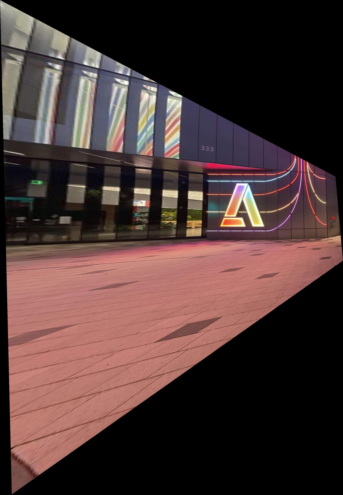
Adobe Founder's Tower at Night Rectified |
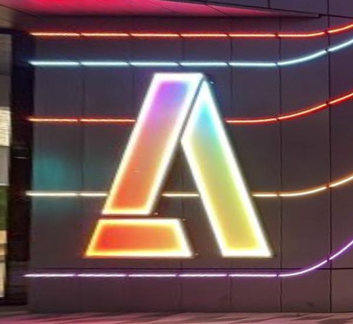
Cropped Adobe Logo |
|---|
| Macbook |
Macbook |
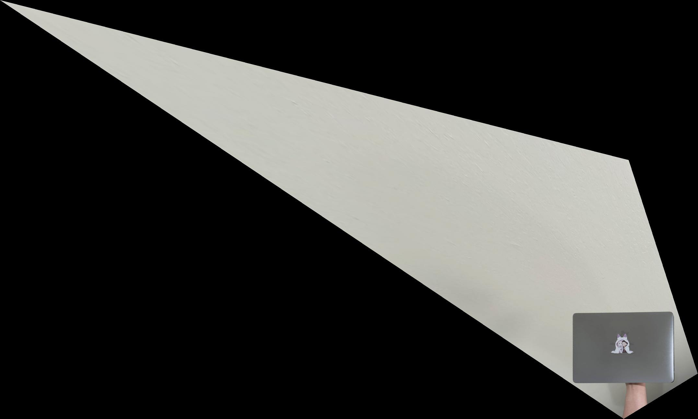
Macbook Rectified |
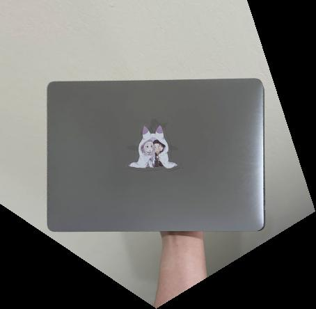
Cropped Macbook |
|---|
As seen in the Macbook example, because the points were manually selected (and often error prone), the results can be extremely sensitive to small errors in the point selection. We are only using four points to define a rectangular plane, and as a result, the homography recovery is very unstable and prone to noise.
Part 4: Blending Images Into a Mosaic
Now that we are able to warp our images, we now need to blend our images. Below are some images we want to blend.
|
Soda Hall Fifth Floor Left |
Soda Hall Fifth Floor Right |
Firstly, we want to keep the left image still, and warp the right image into the left image. Then, we need to adjust the two images such that the correspondence points align with each other, which is often done using a shift of both images calculated from the corners of the warped image. After the alignment process, we pad both images such that they are the same size, by taking the maximum dimensions of the two images.
At this point, we have our two images, one unwarpped and one warpped, aligned together. If we use a naive blending technique where we stack the two images on top of each other, it looks something like this:
|
Soda Hall Naive Blend |
Although the picture doesn't look bad, you can clearly see the seems where one image overlaps the other. This is where alpha blending comes in. To alpha blend, we first start by computing the distance transform of the two images we want to blend, using the scipy.ndimage.distance_transform_edt function. After normalizing, we get a distance transform as that looks like the following:
|
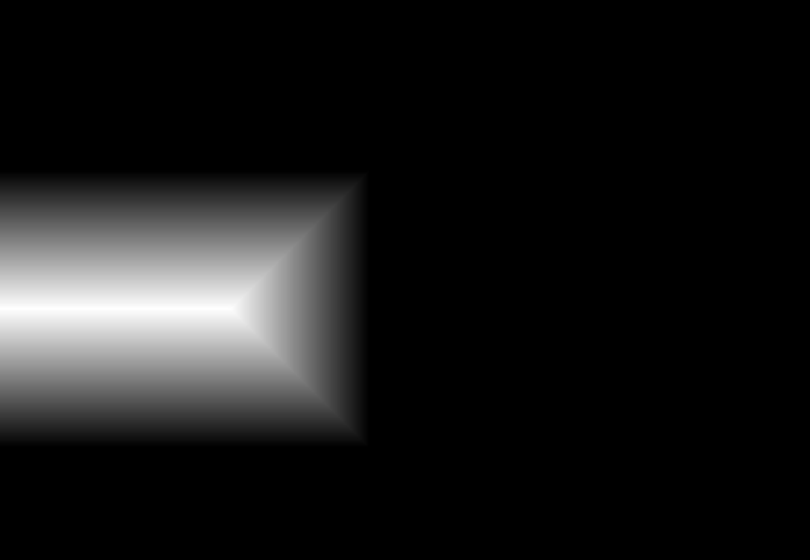
Soda Hall Fifth Floor Left Distance Transform |
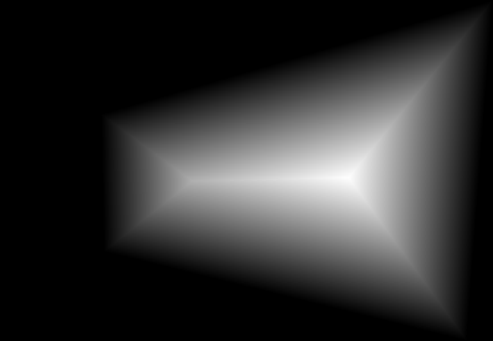
Soda Hall Fifth Floor Right Distance Transform |
We can set our alpha mask to the regions where the left distance transform is greater than the right distance transform, and our mask will look like the following:
|
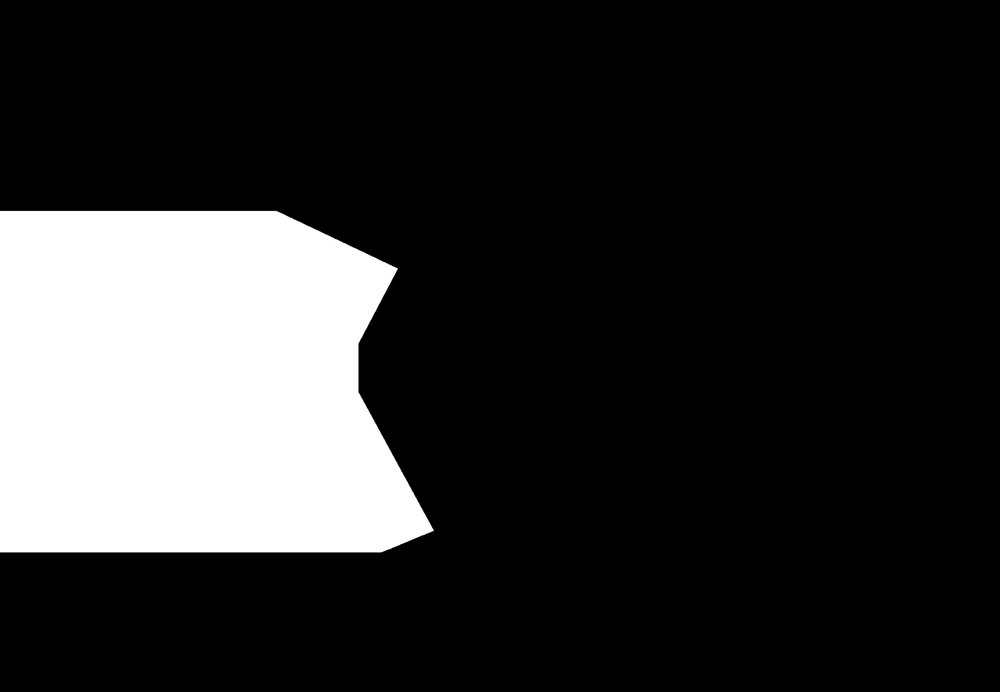
Mask where left distance transform > right distance transform |
With this mask, we will use blending techniques from Project 2 where we used a Gaussian and Laplacian stack to perform a low-pass and high-pass of both images, and blend them together by adding and collapsing the stacks. The results are below:
|
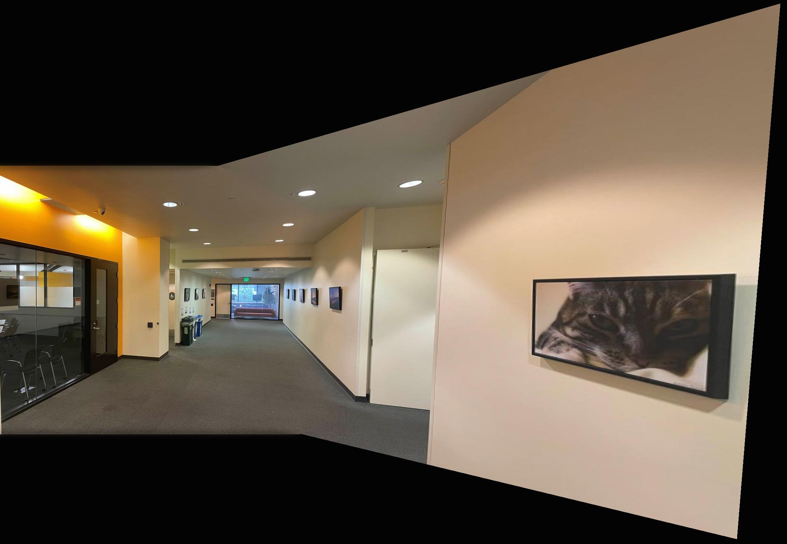
Soda Hall Fifth Floor |
Here are some more mosaics created with the same technique, extended to three pictures.
Example 2: Hearst Mining Building
|
Hearst Mining Building 1 |
Hearst Mining Building 2 |
Hearst Mining Building 3 |
|
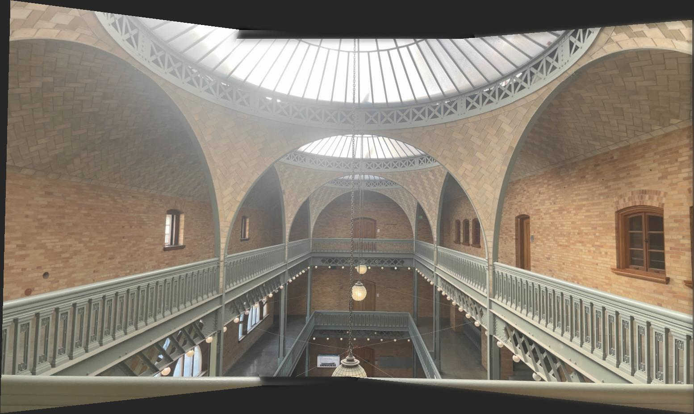
Hearst Mining Building |
Example 3: Sturdy the Bear
|
Sturdy the Bear 1 |
Sturdy the Bear 2 |
Sturdy the Bear 3 |
|
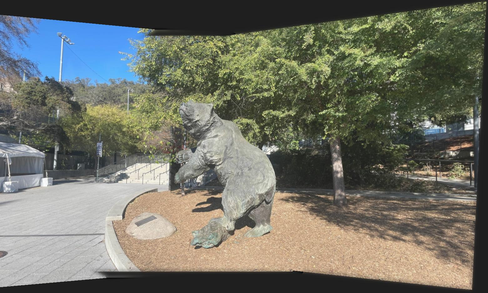
Sturdy the Bear |
It was here where I learned that it is easier to create mosaics out of objects with clear correspondences, such as buildings with sharp corners. The correspondences for this mosaic was hard to define due to the clutterness of the tree's leaves making it hard to tell which correspondence point goes where.
Project Insights
I enjoyed doing this project and learning more about stitching together images using a Homography. Although this project took many hours, I was extremely satisfied in the end to see my results materialize.
Citation
Website Template is from CS184
Tool used to define correspondence points can be found in this link